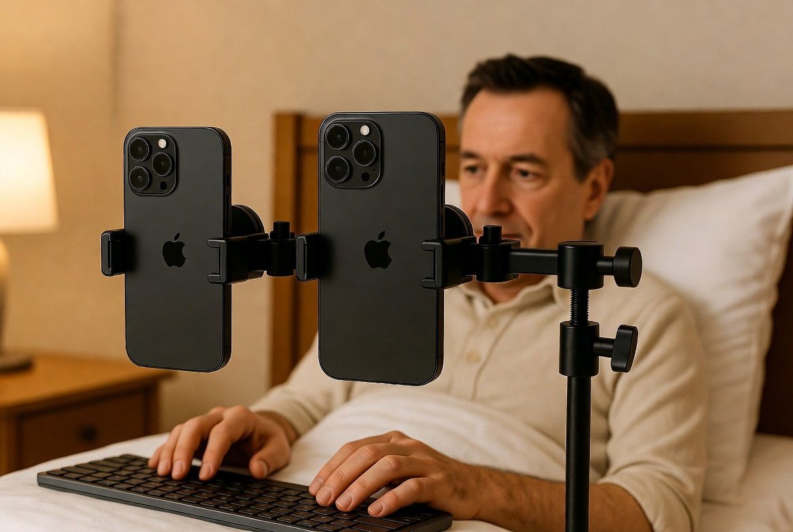

A practical story from the High Tower District

Yo Tower District,
I'm from Texas. Went to Texas A&M. For most of my career I was a professional computer nerd — the kind who had 21 LCD screens running in the house back in 2018, with at least six of them on 24/7 and the AC running full blast.
Then I retired.
Fast-forward to now: I haven’t seriously powered on a desktop computer in over two years. Everything moved into a 12×12 room on East La Sierra. I’m in bed with a $125 5000 BTU unit from Home Depot keeping the room cold for roughly a dollar a day. Two iPhones mounted on a mic stand with magnets and articulating arms hang right where I need them — one angled for these older eyes.
No desktop tower. No wall of monitors. No whole-house AC.
Why?
Because PG&E charges about fifty cents per kilowatt hour.
That’s the actual story.
This wasn’t some aesthetic choice to “go minimalist.” It was basic math. A retired builder who used to run heavy hardware looked at the bill and decided the old setup no longer made sense. So I reduced it to what still works: bed, keyboard, two phones on magnets, cheap targeted cooling, and the ability to keep creating without getting financially punished for it.
If you’re out here in the Tower District trying to create, build, or just live without getting financially punished for existing in California heat — this one’s for you.
Sometimes the most creative thing you can do is figure out how to keep doing the work without letting the system bleed you dry.
Stay sharp out there.
— Aaron
High Tower District